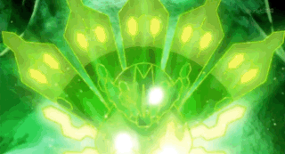
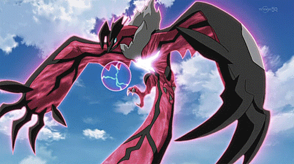

Xearnes in the x and y games is shown as a legendary pokemon in the x game it has 8 antleers instead of two this was the first pokemon game i played so this makes my 1st in mt list.
This pokemon is in xy and z in the games you catch him. But ns the series Ash and his friends{Bonnie} find a cell of zygarde and raise while there was another one when they combined the became zygarde. In the battle for kalos the turn into their ultimate form to stop Lynsadre.
This pokemon Yvelta is the y pokemon it is a dark and ground type .